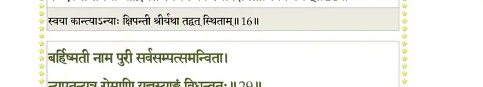
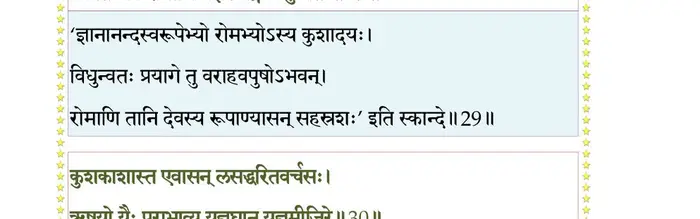
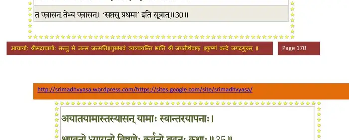
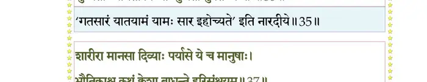
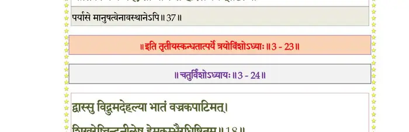

स्कन्ध 3 · अध्याय 23
श्लोक १
मैत्रेय उवाच–
एवमाविष्कृताशेषगुणकर्मोदयं मुनिम् ।
सव्रीड इव तं सम्राट् उपारतमुवाच ह।। १ ।।
एवमाविष्कृताशेषगुणकर्मोदयं मुनिम् ।
सव्रीड इव तं सम्राट् उपारतमुवाच ह।। १ ।।
श्लोक २
मनुरुवाच–
ब्रह्मासृजत् स्वमुखतो युष्मानस्मत्परीप्सया ।
छन्दोमयांस्तपोविद्यायोगयुक्तानलम्पटान्।। २ ।।
ब्रह्मासृजत् स्वमुखतो युष्मानस्मत्परीप्सया ।
छन्दोमयांस्तपोविद्यायोगयुक्तानलम्पटान्।। २ ।।
श्लोक ३
तत्त्राणायासृजच्चास्मान् दोःसहस्रात् सहस्रपात् ।
हृदयं तस्य हि ब्रह्म क्षत्रमङ्गं प्राचक्षते।। ३ ।।
हृदयं तस्य हि ब्रह्म क्षत्रमङ्गं प्राचक्षते।। ३ ।।
श्लोक ४
अतो ह्यन्योन्यमात्मानं ब्रह्म क्षत्रं च रक्षतः ।
रक्षत्यस्मान् द्वयं देवः सदा सदसदात्मकः।। ४ ।।
रक्षत्यस्मान् द्वयं देवः सदा सदसदात्मकः।। ४ ।।
श्लोक ५
तव सन्दर्शनादेव च्छिन्ना मे संशया हृदः ।
यत् स्वयं भगवान् प्राीत्या धर्ममाह रिरक्षिषोः।। ५ ।।
यत् स्वयं भगवान् प्राीत्या धर्ममाह रिरक्षिषोः।। ५ ।।
श्लोक ६
दिष्ठ्या मे भगवान् दृष्टो दुर्दर्शो योऽकृतात्मनाम् ।
दिष्ट्या पादरजः स्पृष्टं शीर्ष्णा ये भवतः शिवम्।। ६ ।।
दिष्ट्या पादरजः स्पृष्टं शीर्ष्णा ये भवतः शिवम्।। ६ ।।
श्लोक ७
दिष्ट्या त्वयाऽनुशिष्टोऽहं कृतश्चानुग्रहो महान् ।
अपावृत्तैः कर्णरन्ध्रैर्जुष्टा दिष्ट्योशतीर्गिरः।। ७ ।।
अपावृत्तैः कर्णरन्ध्रैर्जुष्टा दिष्ट्योशतीर्गिरः।। ७ ।।
श्लोक ८
स भवान् दुहितुः स्नेहपरिक्लिष्टात्मनो मम ।
श्रोतुमर्हसि दीनस्य श्रावितं कृपया मुने।। ८ ।।
श्रोतुमर्हसि दीनस्य श्रावितं कृपया मुने।। ८ ।।
श्लोक ९
प्रिायव्रतोत्तानपदोः स्वसेयं दुहिता मम ।
अन्विच्छन्ती पतिं युक्तं वयःशीलगुणादिभिः।। ९ ।।
अन्विच्छन्ती पतिं युक्तं वयःशीलगुणादिभिः।। ९ ।।
श्लोक १०
यदा तु भवतः शीलश्रुतरूपवयोगुणान् ।
अशृृणोन्नारदात् सैषा त्वय्यासीत् कृतनिश्चया।। १० ।।
अशृृणोन्नारदात् सैषा त्वय्यासीत् कृतनिश्चया।। १० ।।
श्लोक ११
तत् प्रातीच्छ द्विजाग्य्रेमां श्रद्धयोपहृतां मया ।
सर्वात्मनाऽनुरूपां ते गृहमेधेषु कर्मसु।। ११ ।।
सर्वात्मनाऽनुरूपां ते गृहमेधेषु कर्मसु।। ११ ।।
श्लोक १२
उद्यतस्य हि कामस्य प्रातिवादो न शस्यते ।
अपि निर्भुक्तसङ्गस्य कामरक्तस्य किं पुनः।। १२ ।।
अपि निर्भुक्तसङ्गस्य कामरक्तस्य किं पुनः।। १२ ।।
श्लोक १३
य उद्यतमनादृत्य कीनाशमभियाचते ।
क्षीयते तद् यशः स्फीतं मानश्चावज्ञया हतः।। १३ ।।
क्षीयते तद् यशः स्फीतं मानश्चावज्ञया हतः।। १३ ।।
श्लोक १४
अहं त्वाशृृणवं विद्वन्नुद्वाहार्थं समुद्यतम् ।
अतस्त्वमुपकुर्वाणः प्रात्ता प्रातिगृहाण मे।। १४ ।।
अतस्त्वमुपकुर्वाणः प्रात्ता प्रातिगृहाण मे।। १४ ।।
श्लोक १५
ऋषिरुवाच–
बाढमुद्वोढुकामोऽहमप्रामत्ता तवात्मजा ।
आवयोरनुरूपोऽसावाद्यो वैवाहिको विधिः।। १५ ।।
बाढमुद्वोढुकामोऽहमप्रामत्ता तवात्मजा ।
आवयोरनुरूपोऽसावाद्यो वैवाहिको विधिः।। १५ ।।
श्लोक १६
कामः स भूयान्नरदेव तेऽस्याः पुत्र्याः समाम्नायविधौ प्रातीतः ।
क एव ते तनयां नाद्रियेत स्वयैव कान्त्या क्षिपतीमिव श्रियम् ।। १६ ।।
क एव ते तनयां नाद्रियेत स्वयैव कान्त्या क्षिपतीमिव श्रियम् ।। १६ ।।
भागवततात्पर्यनिर्णय

श्लोक १७
यां हर्म्यपृष्ठे क्वणदङ्घ्रिशोभां विक्रीडतीं कन्दुकविह्वलाक्षीम् ।
विश्वावसुर्न्यपतत् स्वाद् विमानाद् विलोक्य संमोहविमूढचेताः।।१७।।
विश्वावसुर्न्यपतत् स्वाद् विमानाद् विलोक्य संमोहविमूढचेताः।।१७।।
श्लोक १८
तां प्र•र्थयन्तीं ललनाललामामसेवितश्रीचरणैरदृष्टाम् ।
सुतां मनोरुच्चपदः स्वसारं को नानुमन्येत बुधोऽभिजातः।। १८ ।।
सुतां मनोरुच्चपदः स्वसारं को नानुमन्येत बुधोऽभिजातः।। १८ ।।
श्लोक १९
अतो भजिष्ये समयेन साध्वीं यावत् तेजो बिभृयादात्मनो मे ।
अतो धर्मान् पारमहंस्यमुख्यान् शुक्लोपदिष्टान् बहुमन्येऽविहिंस्रान्।। १९ ।।
अतो धर्मान् पारमहंस्यमुख्यान् शुक्लोपदिष्टान् बहुमन्येऽविहिंस्रान्।। १९ ।।
श्लोक २०
यतोऽभवद् विश्वमिदं विचित्रं संस्थाप्यते यत्र च वावतिष्ठते ।
प्राजापतीनां पतिरेष मह्यं परं प्रामाणं भगवाननन्तः।। २० ।।
प्राजापतीनां पतिरेष मह्यं परं प्रामाणं भगवाननन्तः।। २० ।।
श्लोक २१
मैत्रेय उवाच–
स उग्रधन्वन्नियदेवाबभाष आसीच्च तूष्णीमरविन्दनाभम् ।
धियोपगृह्णन् स्मितशोभितेन मुखेन चेतो लुलुभे देवहूत्याः।। २१ ।।
स उग्रधन्वन्नियदेवाबभाष आसीच्च तूष्णीमरविन्दनाभम् ।
धियोपगृह्णन् स्मितशोभितेन मुखेन चेतो लुलुभे देवहूत्याः।। २१ ।।
श्लोक २२
सोऽनुज्ञात्वा व्यवसितं महिष्या दुहितुः स्फुटम् ।
तस्मै गुणगणाढ्याय ददौ तुल्यां प्राहर्षितः।। २२ ।।
तस्मै गुणगणाढ्याय ददौ तुल्यां प्राहर्षितः।। २२ ।।
श्लोक २३
शतरूपा महाराज्ञी पारिबर्हान् महाधनान् ।
दम्पत्योः पर्यदात् प्राीत्या गृहवासःपरिच्छदान्।। २३ ।।
दम्पत्योः पर्यदात् प्राीत्या गृहवासःपरिच्छदान्।। २३ ।।
श्लोक २४
प्रात्वा दुहितरं सम्राट् सदृक्षाय गतव्यथः ।
उपगुह्य च बाहुभ्यामौत्कण्ठ्योन्मथिताशयः।। २४ ।।
उपगुह्य च बाहुभ्यामौत्कण्ठ्योन्मथिताशयः।। २४ ।।
श्लोक २५
अशक्नुवंस्तद्विरहं मुञ्चन् बाष्पकलां मुहुः ।
आसिञ्चन्नम्ब वत्सेति नेत्रोदैर्दुहितुः शिखाः।। २५ ।।
आसिञ्चन्नम्ब वत्सेति नेत्रोदैर्दुहितुः शिखाः।। २५ ।।
श्लोक २६
आमन्त्र्य तं मुनिवरमनुज्ञातः सहानुगः ।
प्रातस्थे रथमास्थाय सभार्यः स्वपुरं नृपः।। २६ ।।
प्रातस्थे रथमास्थाय सभार्यः स्वपुरं नृपः।। २६ ।।
श्लोक २७
उभयोर्ऋषिकुल्यायाः सरस्वत्याः सरोधसोः ।
ऋषीणामुपशान्तानां पश्यन्नाश्रमसम्पदः।। २७ ।।
ऋषीणामुपशान्तानां पश्यन्नाश्रमसम्पदः।। २७ ।।
श्लोक २८
तमायान्तमभिप्रोत्य ब्रह्मावर्तं प्राजाः पतिम् ।
गीतसंस्तुतिवादित्रैः प्रात्युदीयुः प्राहर्षिताः।। २८ ।।
गीतसंस्तुतिवादित्रैः प्रात्युदीयुः प्राहर्षिताः।। २८ ।।
श्लोक २९
बर्हिष्मती नाम पुरी सर्वसम्पत्समन्विता ।
न्यपतन् यत्र रोमाणि यज्ञस्याङ्गं विधुन्वतः।। २९ ।।
न्यपतन् यत्र रोमाणि यज्ञस्याङ्गं विधुन्वतः।। २९ ।।
भागवततात्पर्यनिर्णय

श्लोक ३०
कुशकाशास्त एवासल्लसद्धरितवर्चसः ।
ऋषयो यैः पराभाव्य यज्ञघ्नान् यज्ञमीजिरे।। ३० ।।
ऋषयो यैः पराभाव्य यज्ञघ्नान् यज्ञमीजिरे।। ३० ।।
भागवततात्पर्यनिर्णय

श्लोक ३१
कुशकाशमयं बर्हिरास्तीर्य भगवान् मनुः ।
अयजद् यज्ञपुरुषं लब्धं स्थानं यतो दृढम्।। ३१ ।।
अयजद् यज्ञपुरुषं लब्धं स्थानं यतो दृढम्।। ३१ ।।
श्लोक ३२
बर्हिष्मतीं नाम पुरीं निर्विश्य सुखमावसत्
तस्यां प्राविष्टो भवनं तापत्रयविनाशनम् ।
सभार्यः सप्राजः कामान् बुभुजेऽन्याविरोधतः।। ३२ ।।
तस्यां प्राविष्टो भवनं तापत्रयविनाशनम् ।
सभार्यः सप्राजः कामान् बुभुजेऽन्याविरोधतः।। ३२ ।।
श्लोक ३३
संगीयमानसत्कीर्तिः सस्त्रीभिः सुरगायकैः ।
प्रात्यूषेष्वनुबद्धेन हृदा शृण्वन् हरेः कथाः।। ३३ ।।
प्रात्यूषेष्वनुबद्धेन हृदा शृण्वन् हरेः कथाः।। ३३ ।।
श्लोक ३४
निष्णातं योगमायासु मुनिं स्वायुम्भुवं मनुम् ।
यदा स्रंसयितुं भोगा न शेकुर्भगवत्परम्।। ३४ ।।
यदा स्रंसयितुं भोगा न शेकुर्भगवत्परम्।। ३४ ।।
श्लोक ३५
अयातयामास्तस्यासन् यामाः स्वान्तरयापनाः ।
शृण्वतो ध्यायतो विष्णोः कुर्वतो ब्रुवतः कथाः।। ३५ ।।
शृण्वतो ध्यायतो विष्णोः कुर्वतो ब्रुवतः कथाः।। ३५ ।।
भागवततात्पर्यनिर्णय

श्लोक ३६
स एवं स्वान्तरं निन्ये युगानामेकसप्ततिम् ।
वासुदेवप्रासङ्गेन परिभूतगतित्रयः।। ३६ ।।
वासुदेवप्रासङ्गेन परिभूतगतित्रयः।। ३६ ।।
श्लोक ३७
शारीरा मानसा दिव्याः पर्यासे ये च मानुषाः ।
भौतिकाश्च कथं क्लेशा बाधन्ते हरिसंश्रयम्।। ३७ ।।
भौतिकाश्च कथं क्लेशा बाधन्ते हरिसंश्रयम्।। ३७ ।।
भागवततात्पर्यनिर्णय

श्लोक ३८
यः पृष्टो मुनिभिः प्र•ह धर्मान् नानाविधान् शुभान् ।
नृणां वर्णाश्रमाणां च सर्वभूतहितः सदा।। ३८ ।।
नृणां वर्णाश्रमाणां च सर्वभूतहितः सदा।। ३८ ।।
श्लोक ३९
एतत् त आदिराजस्य मनोश्चरितमद्भुतम् ।
वर्णितं वर्णनीयस्य तदपत्योदयं श्रुणु।। ३९ ।।
वर्णितं वर्णनीयस्य तदपत्योदयं श्रुणु।। ३९ ।।
।। इति श्रीमद्भागवते तृतयस्कन्धे त्रयोविंशोऽध्यायः ।।